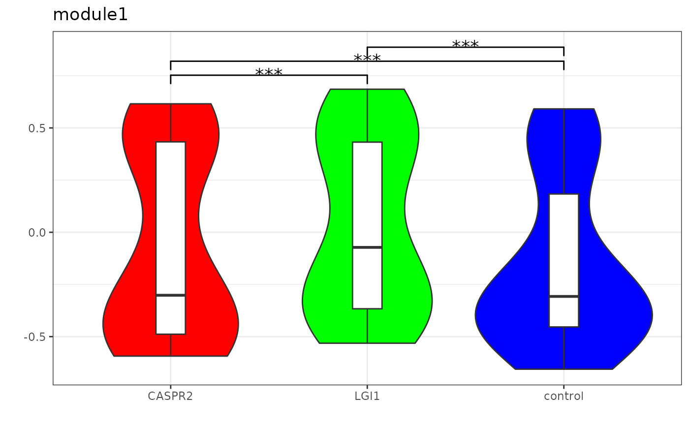

create combined violin and boxplot of the module score
Examples
library(Seurat)
#> Loading required package: SeuratObject
#> Loading required package: sp
#> ‘SeuratObject’ was built under R 4.4.0 but the current version is
#> 4.4.2; it is recomended that you reinstall ‘SeuratObject’ as the ABI
#> for R may have changed
#>
#> Attaching package: ‘SeuratObject’
#> The following objects are masked from ‘package:base’:
#>
#> intersect, t
set.seed(123)
pbmc_small$AIE_type <- sample(c("control", "CASPR2", "LGI1"), ncol(pbmc_small), replace = TRUE)
module1 <- list(c(rownames(pbmc_small)[1:100]))
pbmc_small <- AddModuleScore(
pbmc_small,
features = module1,
assay = "RNA",
name = "module",
ctrl = 5
)
ModulePlot(
x_var = "AIE_type",
module = "module1",
object = pbmc_small,
color = c("control" = "blue", "CASPR2" = "red", "LGI1" = "green")
)
#> Warning: Using formula(x) is deprecated when x is a character vector of length > 1.
#> Consider formula(paste(x, collapse = " ")) instead.
